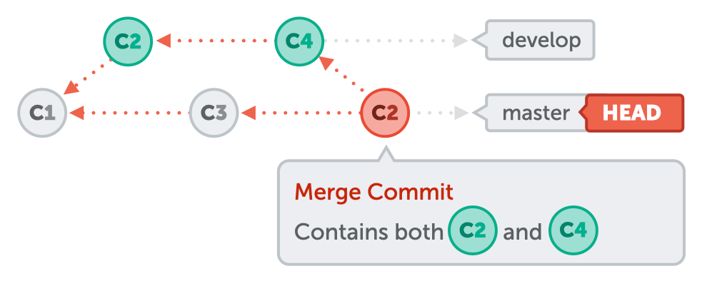
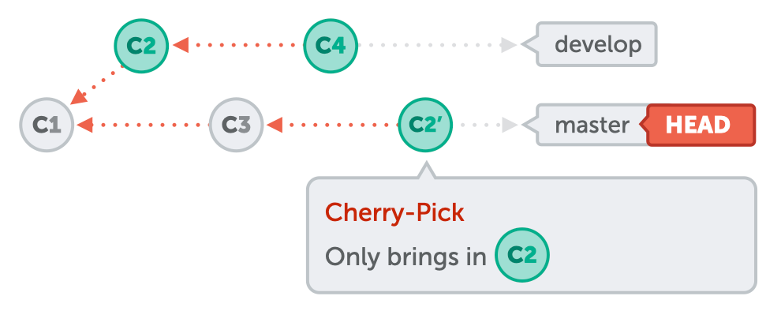

Повторение - мать учения
для пользователей Windows:
git config --global core.autocrlf true
git config --global core.safecrlf warnдля пользователей Mac:
git config --global core.autocrlf input
git config --global core.safecrlf warnПоказывать UTF-8 символы в названиях файлов (иногда с этим бывают проблемы):
git config --global core.quotepath offgit config --global alias.co checkoutgit config --global alias.ci commitgit config --global alias.st statusgit config --global alias.br branchgit config --global alias.lol "log --pretty=format:'%h %ad | %s%d [%an]' --graph --date=short"git config --global alias.msg "commit --allow-empty -m" #message-only commitgit config --global alias.undo "reset --soft HEAD^"git co -b [название_моей_ветки] origin/[target_ветка]По умолчанию если не передать второй аргумент в git checkout -b то целевой веткой становится
ветка, в которой вы находитесь в данный момент.
P.S. в начале карьеры пару раз факапился на этом, когда целевую ветку создавал от develop
Как Я делаю:
git co -b feature origin/mastergit statusbranch 'feature' set up to track 'origin/master'.
Switched to a new branch 'feature'Что это мне дает:
git pull --rebase # беру с мастера изменения,
и применяю свои коммиты поверхgit push -u origin feature # заливаю свою ветку,
теперь она самостоятельная и смотрит на себя же в origingit commit -m "feat: added feature"git commit -m "test: added specs"git commit -m "refactor: some refactoring"git fetch origingit pull --rebase"5af34d1 refactor: some refactoring
6d4f51 test: added specs
4e3edf feat: added featuremy commits 👆
commits from master 👇
663c3e0 feat(sso): new define sso config
4ac54d3 Merge branch 'chore/6502/bump-ui-kit' into 'master'
7d3f9a4 chore: bump ui-kit versiongit merge origin/[source_branch]Почему добавляем origin ?
Когда нет необходимости в том, чтобы через git pull скачивать изменения локально (даже могут быть конфликты)
☝️Главное, не забыть перед git merge выполнить git fetch origin
Rebase - швейцарский нож гита 🔪
git rebase origin/[source_branch]git merge/rebase --continueПротивоположная команда:
git merge/rebase --abortНе используйте перебазирование …
git rebase -i HEAD~44 - число коммитов, которые нужно изменить
git pull # скачивает локально и делает mergegit fetch # получает update, но не скачиваетgit fetch origin # я обычно использую с origingit pull --rebaseЕсли все программисты в команде возьмут за правило пользоваться git pull --rebase, тогда каждая из веток в удаленном репозитории будет выглядеть линейно.
git cherry-pick [commit-hash]
merge
cherry-pick
git cherry-pick [commit-hash] --no-commit
Чтобы забрать изменения с коммита не применяя его к ветке
Полезно чтобы внести какие-то изменения в предыдущую реализацию
git revert [commit-hash]
создает новый коммит с отменой изменений с коммита хэш которого передан в комманду
git revert -m 1 [merge-commit-hash]опция -m 1 сообщает git, что мы хотим сохранить родительскую часть слияния (то есть ветку, в которую мы влились)
Дословный перевод с англ. - считать неизмененным.
git update-index --assume-unchanged "[путь_до_файла]"Мне помогало, когда бесячий тест падал из за таймзоны, а мне некогда было это чинить...
Поэтому Я закомментил тест, и сказал гиту временно не смотри на этот файл
P.S. Тесты лучше не комментить, тут согласен, согрешил 😄